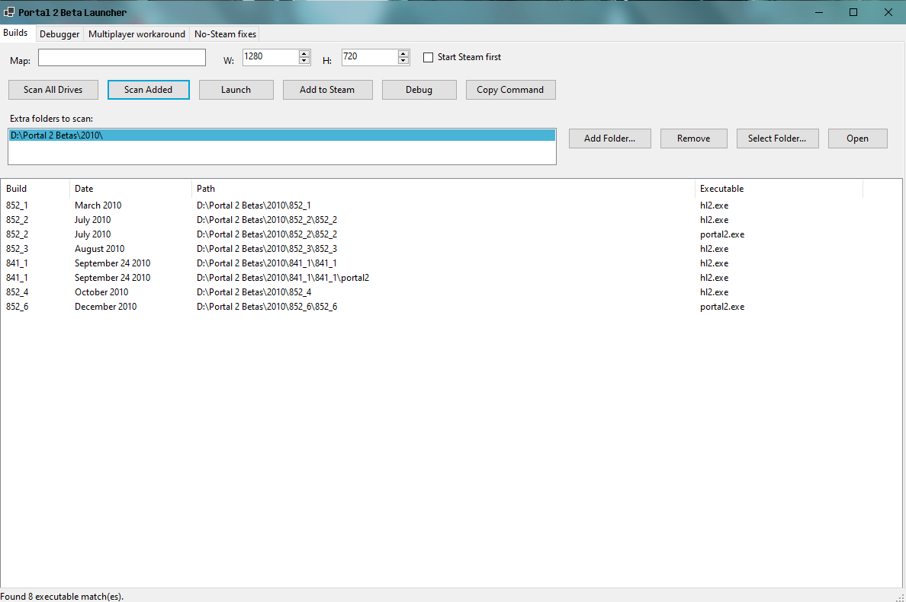
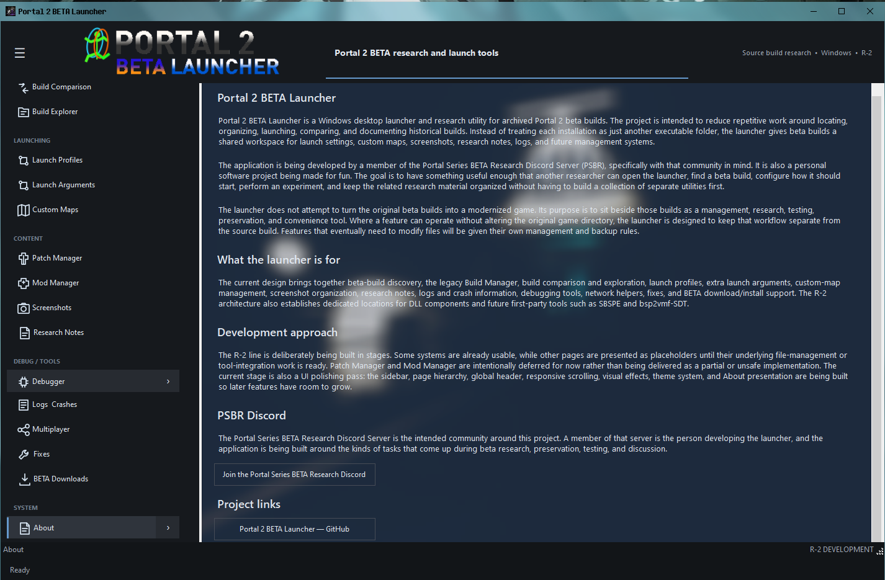

Portal 2 BETA Launcher
An independent Windows project for Portal 2 beta research, testing, preservation, and exploration.
R-2 in developmentWindowsPSBR
Welcome
P2BL is a dedicated launcher and research-oriented project built around historical Portal 2 development builds. R-2 is the current major development line and is a substantial continuation of the original R-1 prototype.
Portal Series BETA Research
PSBR is the community/research environment associated with P2BL. Visit the Discord to discuss beta research, preservation, technical findings, and related projects.
About P2BL
Portal 2 BETA Launcher (P2BL) is an independent Windows desktop project focused on historical Portal 2 beta research, preservation, testing, experimentation, and exploration.
P2BL began as the R-1 prototype and is now being substantially redeveloped as R-2. The project is closely associated with the Portal Series BETA Research (PSBR) community.
Project
Creator / developer: sonic Fan Tech
Platform: Microsoft Windows
Current development: R-2
Community: Portal Series BETA Research
History
R-1 established the original launcher concept. R-2 is a substantial redevelopment with a rebuilt presentation and expanded project ecosystem.
Project Artwork
R-1 / older UI

R-2 / new UI

Features List
Features are separated by development generation. R-1 covers the original/prototype launcher. R-2 covers the newer in-development direction.
R-1 Features — Original / Prototype
Core & Build Launching
- Portal 2 beta build launcher.
- Multiple historical beta builds.
- Build selection and launching.
- Build-specific executable and command-line handling.
- Multiple launch-command variants.
Prototype UI
- Original launcher interface and layout.
- Basic build management/selection.
- Prototype build discovery and launch workflow.
Legacy
- R-1 prototype documentation and historical reference retained for the project.
R-2 Features — New / In Development
Build Discovery & Management
- Connected-drive scanning.
- User-added folder scanning.
- Fast build discovery designed to avoid missing valid folders.
- Build Manager redesign.
- Persistent discovered-build data planned.
- Build-specific resource organization.
Launching
- Per-build launch configurations.
- Known beta launch command variants.
- Custom map launch support planned.
- Extra Launch Args page.
- Custom command-line argument persistence planned.
Maps, Mods & Patches
- Custom Map Manager planned.
- Build-specific custom map directories.
- Mod Manager deferred.
- Patch Manager deferred.
- Build-aware resource organization.
User Interface
- Full R-2 UI rebuild.
- Valve-inspired visual direction.
- Aero-inspired navigation concepts.
- Sidebar navigation.
- Sidebar hide/show.
- Sidebar scrolling.
- Expandable navigation groups.
- Persistent launcher branding.
- Progress bars for long operations.
- Visual effects and improved feedback.
Settings & About
- Dedicated Settings page.
- GUI-first operation.
- Console visibility setting planned.
- About page with project, credit, legal, tool, format, and license information.
- PSBR Discord information and invite.
- About background / code-blur presentation.
Custom Formats & Tools
- Custom file-format ecosystem documentation.
- .RBGIFormat, .SSDA, .SBGL, .SBL and .GL references.
- First-party/third-party tool separation.
- Bundled tool organization.
- Related-tool integration planned.
Overlay & Screenshots
- P2BOverlayUIHandler C++ component.
- In-game overlay concept.
- Shift+Z overlay hotkey.
- Shift+9 screenshot hotkey.
- Dedicated P2B Launcher Screenshots output location.
Advanced / Future
- Debugger/advanced tool pages.
- Future debugger integration.
- Improved error handling and diagnostics.
- More advanced resource management.
- SBSPE and bsp2vmf-SDT integration.
- Additional research utilities.
Program Technical Information
Application
- Windows desktop application.
- Main launcher written in C#.
- Native C++ components for the overlay system.
- Developed with Microsoft Visual Studio.
Architecture
- Main launcher GUI.
- P2BOverlayUIHandler native overlay component.
- Ex-onP2B-UIHandoler.exe helper component.
- Resource and saved-data directories.
Known project paths
Resources/C-Maps/<build> Resources/Mods/<build> Resources/SavedData/Settings.GL bin/DLLs/ bin/3RD-Party-Tools/ bin/1st-Party-Tools/SBSPE/ bin/1st-Party-Tools/bsp2vmf-SDT/
Known custom formats
.RBGIFormat.SSDA.SBGL.SBL.GL
Related first-party projects
SBSPE, bsp2vmf-SDT, and RBGIFormat-related tooling are part of the wider research/tool ecosystem discussed alongside P2BL.
Third-party software
7-Zip is a known third-party tool associated with the project. Third-party software remains governed by its own licenses.
EULAs & Licenses
First-party project EULAs and third-party license documents are listed below. Draft labels have been removed from the first-party documents and replaced with Version 1.0 documents for the website.
1st-Party EULAs & Licenses
3rd-Party EULAs / Licenses
Downloads
Released and in-development builds will be listed here. Currently, the public download section contains the R-1 release.
R-1 — Released
R-2 — In Development
R-2 is currently in development and does not have a public website download listed yet.